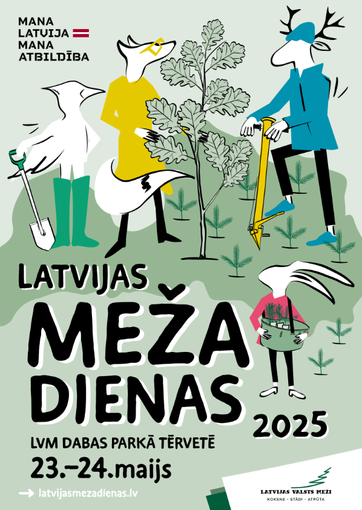

Norit pieteikšanās "Latvijas meža dienām"
Sveiciens!
Arī šogad aicinām skolas reģistrēties dalībai grandiozākajā meža izziņas pasākumā – Latvijas Meža dienās, kas jau 23. un 24. maijā norisināsies Latvijas valsts mežu dabas parkā Tērvetē! 
Galvenā tēma – “Mana Latvija. Mana atbildība” – mudinās ikvienu aizdomāties par savu lomu valsts drošÄ«bā, labklājībā un mežu nākotnē. Pasākuma laikā dabas parka teritorijā kopīgiem spēkiem atjaunosim arī vētras gāztās mežaudzes, iestādot vairāk kā 10 000 jaunu koku! 
Un, protams, kā jau katru gadu, sagaidāmi arī īpašie muzikālie viesi. 23. maijā skolēnus uz skatuves sagaidīs Latvijas hiphopa mākslinieks Fiņķis, bet 24. maijā – grupa “Carnival Youth”! 
Ieeja pasākumā ir bez maksas. Īpaši ciemos gaidīti bērni un jaunieši, lai iepazītu meža audzÄ“šanas ciklu no sēkliņas līdz koka mājai, kā arī izzinātu mācību un karjeras iespējas meža nozarē vairāk nekā 100 meža izziņas pieturās. Visiem pasākuma dalībniekiem dāvana – bezmaksas ieeja LVM dabas parkā Tērvetē! 
Lai saņemtu papildus informāciju par pasākumā gaidāmajām aktualitātēm, aicinām skolas līdz 20. maijam aizpildīt reģistrācijas anketu. 
Visa informācija par pasākumu pieejama vietnē www.latvijasmezadienas.lv
|
@agenskalna.valsts |
avgdome@gmail.com |
@avgdome |
@agenskalniesi |